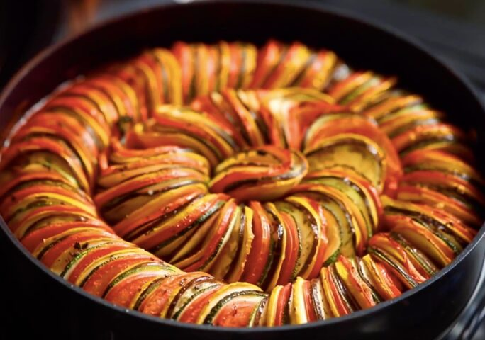

Ratatouille

Description
A fun cold-weather pick-me-up dish.
Ingredients
Veggies
- 2 Eggplants
- 6 Roma Tomatoes
- 2 Yellow Squash
- 2 Zucchini
Sauce
- 2 TBLSP Olive Oil
- 1 Onion, Diced
- 4 Cloves Garlic, Diced
- 1 Red Bell Pepper, Diced
- 1 Yellow Bell Pepper, Diced
- Salt, to taste
- 28oz Can Crushed Tomato
- 2 TBLSP Chopped Fresh Basil
Herb Seasoning
- 2 TBLSP chopped Fresh Basil
- 1 TSP Garlic, Minced
- 2 TBLSP Chopped Fresh Parsley
- 2 TSP Fresh Thyme
- Salt, to taste
- Pepper, to taste
- 4 TBLSP Olive Oil
Preparation
- Preheat the oven to 375F.
- Slice the eggplant, tomatoes,
squash and zucchini into approximately
1/16 inch rounds, then set aside.
- Make the sauce: Heat the olive oil in a
12 inch oven-safe pan over medium-high heat.
Saute the onion, garlic, and bell peppers until
soft, about 10 minutes. Season with salt and pepper
then add the crushed tomatoes. Stir until
the ingredients are fully incorporated. Remove from heat, then add the basil.
Stir once more, then smooth the surface of the sauce with
a spatula.
-
Arrange the sliced Veggies in alternating patters,
on top of the sauce from the outer edge to the middle
of the pan. Season with salt and pepper.
-
Make the herb seasoning: In a small bowl,
mix together the basil, garlic, parsley, thyme, salt, pepper and olive oil.
Spoon the herb seasoning over the vegetables.
-
Cover pan with foil and bake for 40 minutes.
Uncover, then bake for another 20 minutes, until vegetables are softened.
-
Serve hot.